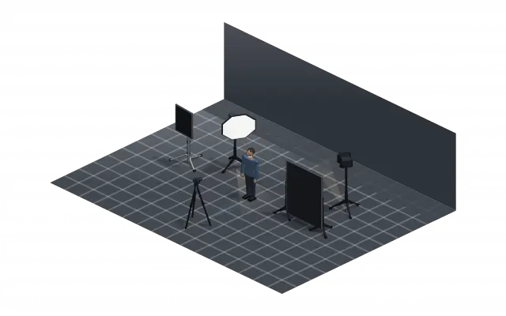
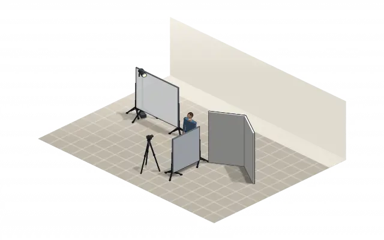
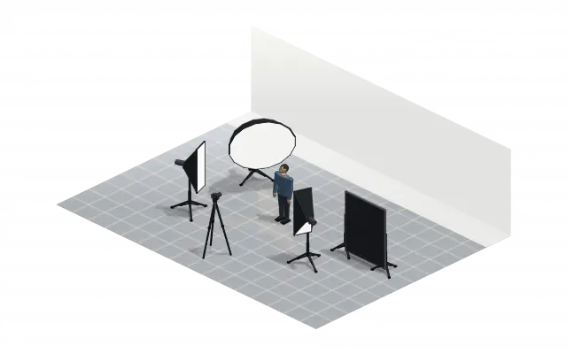
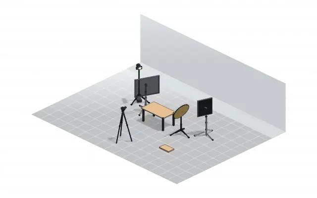
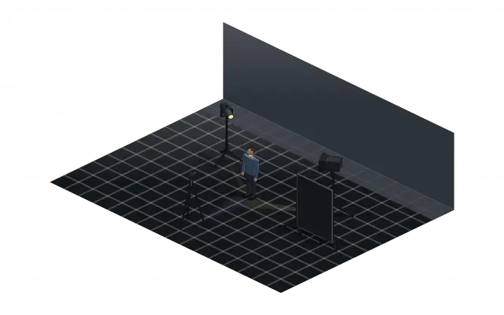
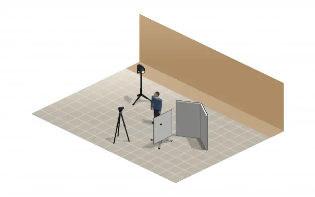
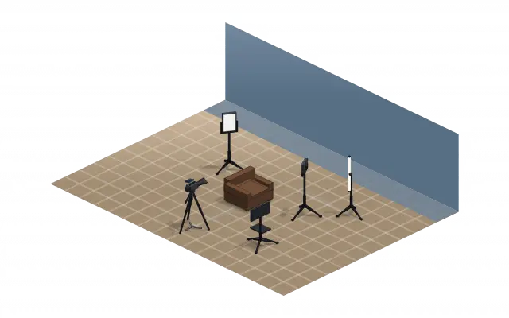
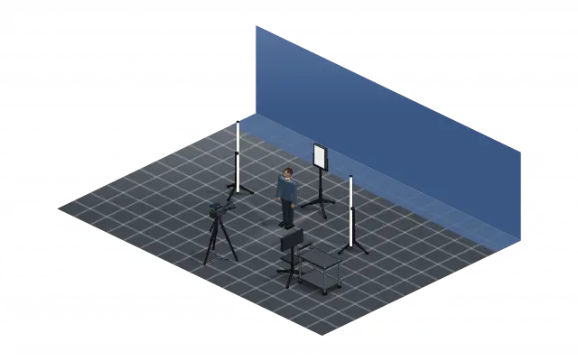
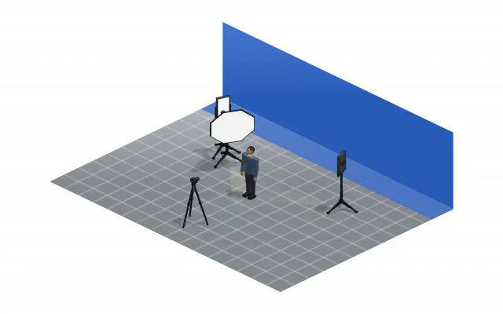

Retrato, beauty y corporate
Bases eficaces para headshot, retrato editorial, beauty y retrato profesional.
Ejemplos: retrato suave 45°, beauty clamshell, corporate clean.

Presets
Los presets funcionan como puntos de partida rápidos. Ayudan a expresar la intención de luz, organizar el decorado y acelerar la preproducción.
Galería
Cada preset se abre directamente en la aplicación: muévelo, ajústalo y luego expórtalo o guárdalo.
Headshots versátiles, books de actor y retratos editoriales.
 Retrato Suave 45°Cámara Trípode estándar, Softbox Octa 120, Reflector 110 cm y Flag 60 x 90
Retrato Suave 45°Cámara Trípode estándar, Softbox Octa 120, Reflector 110 cm y Flag 60 x 90 Headshot Corporate LimpioCámara Trípode estándar, Softbox Recta 90 x 120, Reflector panel 120 x 180 y V-flat 100 x 200 +1
Headshot Corporate LimpioCámara Trípode estándar, Softbox Recta 90 x 120, Reflector panel 120 x 180 y V-flat 100 x 200 +1
Actor Low KeyCámara Trípode estándar, Softbox Octa 90, Negative fill 120 x 200 y Fresnel 200 W +1
Daylight V-flatCámara Trípode estándar, Marco difusor 200 x 200, COB LED 600 W y V-flat 120 x 240 +1Esquemas limpios para piel, maquillaje y glamour de estudio.
 Beauty ClamshellCámara Trípode estándar, Beauty dish 70 cm, Reflector 110 cm y Flag 90 x 120
Beauty ClamshellCámara Trípode estándar, Beauty dish 70 cm, Reflector 110 cm y Flag 90 x 120 Beauty Ring LimpioCámara Trípode estándar, Ring light 45 cm, Flag 60 x 90 y Reflector panel 120 x 180
Beauty Ring LimpioCámara Trípode estándar, Ring light 45 cm, Flag 60 x 90 y Reflector panel 120 x 180 Beauty Glossy StripsCámara Trípode estándar, Beauty dish 55 cm, Striplight 30 x 120 y Reflector panel 120 x 180
Beauty Glossy StripsCámara Trípode estándar, Beauty dish 55 cm, Striplight 30 x 120 y Reflector panel 120 x 180 Maquillaje EditorialTaburete Alto, Cámara Trípode estándar, Panel LED 1 x 2 y Espejo De pie +1
Maquillaje EditorialTaburete Alto, Cámara Trípode estándar, Panel LED 1 x 2 y Espejo De pie +1Retrato empresarial, directivos y comunicación de marca.
 Corporate Gray LimpioCámara Trípode estándar, Softbox Recta 90 x 120, Reflector 110 cm y Flag 60 x 90 +1
Corporate Gray LimpioCámara Trípode estándar, Softbox Recta 90 x 120, Reflector 110 cm y Flag 60 x 90 +1 Ejecutivo EscritorioEscritorio 140 x 70, Silla Standard, Cámara Trípode estándar y Panel LED 1 x 2 +2
Ejecutivo EscritorioEscritorio 140 x 70, Silla Standard, Cámara Trípode estándar y Panel LED 1 x 2 +2 LinkedIn ParaguasCámara Trípode alto, Paraguas difusor 105 cm, Reflector 80 cm y V-flat 100 x 200
LinkedIn ParaguasCámara Trípode alto, Paraguas difusor 105 cm, Reflector 80 cm y V-flat 100 x 200Siluetas, cuerpo entero y luz editorial con más contraste.

Moda ParabólicoCámara Trípode alto, Softbox Parabolique 150, Striplight 40 x 140 y Negative fill 120 x 200 Catálogo LimpioCámara Trípode alto, Softbox Recta 90 x 120 y Reflector panel 120 x 180
Catálogo LimpioCámara Trípode alto, Softbox Recta 90 x 120 y Reflector panel 120 x 180 Moda Silueta StripsCámara Trípode alto, Striplight 40 x 140 y Reflector panel 120 x 180
Moda Silueta StripsCámara Trípode alto, Striplight 40 x 140 y Reflector panel 120 x 180 Editorial ProyectorCámara Trípode alto, Proyector óptico 19°, Softbox Octa 90 y Flag 90 x 120 +1
Editorial ProyectorCámara Trípode alto, Proyector óptico 19°, Softbox Octa 90 y Flag 90 x 120 +1 High key ParaguasCámara Trípode alto, Paraguas profundo 135 cm, Reflector panel 120 x 180 y V-flat 120 x 240
High key ParaguasCámara Trípode alto, Paraguas profundo 135 cm, Reflector panel 120 x 180 y V-flat 120 x 240Packshots, tabletop y sets publicitarios controlados.
 Packshot TabletopMesa 120 x 70, Cámara Trípode estándar, Softbox Recta 60 x 90 y Marco difusor 100 x 150 +2
Packshot TabletopMesa 120 x 70, Cámara Trípode estándar, Softbox Recta 60 x 90 y Marco difusor 100 x 150 +2 Botella SpecularMesa 120 x 70, Cámara Trípode estándar, Striplight 30 x 120 y Marco difusor 200 x 200 +2
Botella SpecularMesa 120 x 70, Cámara Trípode estándar, Striplight 30 x 120 y Marco difusor 200 x 200 +2
Joyería ScrimMesa 120 x 70, Cámara Trípode alto, COB LED 300 W y Scrim 100 x 100 +3 Food EditorialMesa 160 x 80, Cámara Trípode alto, Lantern 90 cm y Foamcore 100 x 150 +2
Food EditorialMesa 160 x 80, Cámara Trípode alto, Lantern 90 cm y Foamcore 100 x 150 +2 Flat lay RopaMesa 160 x 80, Cámara Trípode alto, Escalera Pequeño y Softbox Recta 90 x 120 +1
Flat lay RopaMesa 160 x 80, Cámara Trípode alto, Escalera Pequeño y Softbox Recta 90 x 120 +1Dúo, familia, niños y pequeños equipos en estudio.
 Dúo Suave AnchoCámara Trípode estándar, Softbox Parabolique 150, Panel LED 1 x 2 y Flag 90 x 120 +1
Dúo Suave AnchoCámara Trípode estándar, Softbox Parabolique 150, Panel LED 1 x 2 y Flag 90 x 120 +1 Familia Suave DaylightCámara Trípode estándar, Softbox Parabolique 150, Reflector panel 120 x 180 y Banco 120 cm
Familia Suave DaylightCámara Trípode estándar, Softbox Parabolique 150, Reflector panel 120 x 180 y Banco 120 cm Trío CorporateCámara Trípode alto, Softbox Recta 90 x 120, Reflector panel 120 x 180 y Banco 120 cm
Trío CorporateCámara Trípode alto, Softbox Recta 90 x 120, Reflector panel 120 x 180 y Banco 120 cm Kids PlayfulCubo de posing 50 cm, Cámara Trípode estándar y Paraguas difusor 105 cm
Kids PlayfulCubo de posing 50 cm, Cámara Trípode estándar y Paraguas difusor 105 cmAmbientes íntimos, suaves o lujosos para series boudoir.
 Boudoir Ventana SuaveSofá 180 cm, Cámara Trípode estándar, Marco difusor 200 x 200 y COB LED 600 W +2
Boudoir Ventana SuaveSofá 180 cm, Cámara Trípode estándar, Marco difusor 200 x 200 y COB LED 600 W +2 Boudoir Sillón Low keySillón 90 cm, Cámara Trípode estándar, Paraguas plateado 150 cm y Negative fill 120 x 200 +1
Boudoir Sillón Low keySillón 90 cm, Cámara Trípode estándar, Paraguas plateado 150 cm y Negative fill 120 x 200 +1 Boudoir Lantern LoungeSofá 180 cm, Cámara Trípode estándar, Lantern 90 cm y Striplight 30 x 120 +2
Boudoir Lantern LoungeSofá 180 cm, Cámara Trípode estándar, Lantern 90 cm y Striplight 30 x 120 +2 Boudoir ParabólicoSillón 90 cm, Cámara Trípode alto, Softbox Parabolique 150 y Striplight 40 x 140 +1
Boudoir ParabólicoSillón 90 cm, Cámara Trípode alto, Softbox Parabolique 150 y Striplight 40 x 140 +1Setups sensuales, low key o gráficos sin recargar la escena.
 Erótico Silueta BurdeosCámara Trípode alto, Striplight 40 x 140 y Proyector óptico 36°
Erótico Silueta BurdeosCámara Trípode alto, Striplight 40 x 140 y Proyector óptico 36°
Erótico Proyector SombraCámara Trípode alto, Proyector óptico 19°, Fresnel 650 W y Negative fill 120 x 200 Erótico Neón TubosCámara Trípode estándar, Tubo LED 240 cm y COB LED 300 W
Erótico Neón TubosCámara Trípode estándar, Tubo LED 240 cm y COB LED 300 W Erótico Sofá ContrasteSofá 180 cm, Cámara Trípode alto, Paraguas plateado 150 cm y Striplight 30 x 120 +1
Erótico Sofá ContrasteSofá 180 cm, Cámara Trípode alto, Paraguas plateado 150 cm y Striplight 30 x 120 +1Iluminación escultórica, high key o gráfica para desnudo.
 Desnudo artístico Escultórico DuroCámara Trípode alto, Fresnel 650 W, Reflector 80 cm y Flag 90 x 120
Desnudo artístico Escultórico DuroCámara Trípode alto, Fresnel 650 W, Reflector 80 cm y Flag 90 x 120 Desnudo artístico High Key ClásicoCámara Trípode estándar, Softbox Recta 90 x 120 y Reflector panel 120 x 180
Desnudo artístico High Key ClásicoCámara Trípode estándar, Softbox Recta 90 x 120 y Reflector panel 120 x 180 Desnudo artístico Contorno ContraluzCámara Trípode estándar, Striplight 40 x 140 y Negative fill 120 x 200
Desnudo artístico Contorno ContraluzCámara Trípode estándar, Striplight 40 x 140 y Negative fill 120 x 200
Desnudo artístico Gráfico ProyectorCámara Trípode alto, Proyector óptico 36°, V-flat 100 x 200 y Foamcore 100 x 150Entrevistas, podcast, greenscreen y sets híbridos.

Entrevista LEDSillón 90 cm, Cámara de video Trípode video, Panel LED 1 x 2 y Panel LED 1 x 1 +2 Podcast EscritorioEscritorio 140 x 70, Silla Standard, Cámara de video Trípode video y Panel LED 1 x 2 +4
Podcast EscritorioEscritorio 140 x 70, Silla Standard, Cámara de video Trípode video y Panel LED 1 x 2 +4 Greenscreen PresentadorCámara de video Trípode video, COB LED 600 W, COB LED 300 W y Panel LED 1 x 2
Greenscreen PresentadorCámara de video Trípode video, COB LED 600 W, COB LED 300 W y Panel LED 1 x 2 Masterclass SuaveEscritorio 140 x 70, Taburete Alto, Cámara de video Trípode video y Lantern 90 cm +2
Masterclass SuaveEscritorio 140 x 70, Taburete Alto, Cámara de video Trípode video y Lantern 90 cm +2
Moda BTS VideoCámara de video Trípode video, Tubo LED 240 cm, Panel LED 1 x 2 y Carro Carro rodante +1Presets con proyección, espejo, chroma y sombras.
 Cinema GoboCámara Trípode alto, Proyector óptico 19°, Fresnel 650 W y Flag 90 x 120 +1
Cinema GoboCámara Trípode alto, Proyector óptico 19°, Fresnel 650 W y Flag 90 x 120 +1 Espejo TubosCámara Trípode estándar, Espejo De pie y Tubo LED 240 cm
Espejo TubosCámara Trípode estándar, Espejo De pie y Tubo LED 240 cm
Chroma PopCámara Trípode estándar, Softbox Octa 120 y Panel LED 1 x 2 Sombra PlayCámara Trípode alto, Fresnel 200 W, Cutter 45 x 120 y V-flat 120 x 240 +1
Sombra PlayCámara Trípode alto, Fresnel 200 W, Cutter 45 x 120 y V-flat 120 x 240 +1Bases eficaces para headshot, retrato editorial, beauty y retrato profesional.
Ejemplos: retrato suave 45°, beauty clamshell, corporate clean.
Presets más estructurados para silueta, catálogo, botella, dúo, familia o pequeño equipo.
Ejemplos: moda parabólica, packshot tabletop, familia soft daylight.
Escenas más gráficas o sensibles con mobiliario, fondos marcados, proyecciones y sombras.
Ejemplos: boudoir parabolic, nude sculptural hard, shadow play.
Categorías
Fuentes amplias, rebote suave y control preciso para una piel limpia y un rostro bien modelado.
Categorías
Presets más atmosféricos con fondos de color, mobiliario, negative fill y mayor separación.
Categorías
Una base clara para contenido hablado con cámara, silla, paneles LED, tubos y control de plató.
Práctico
Los presets aceleran el arranque y luego puedes mover, girar, eliminar o completar cada elemento.